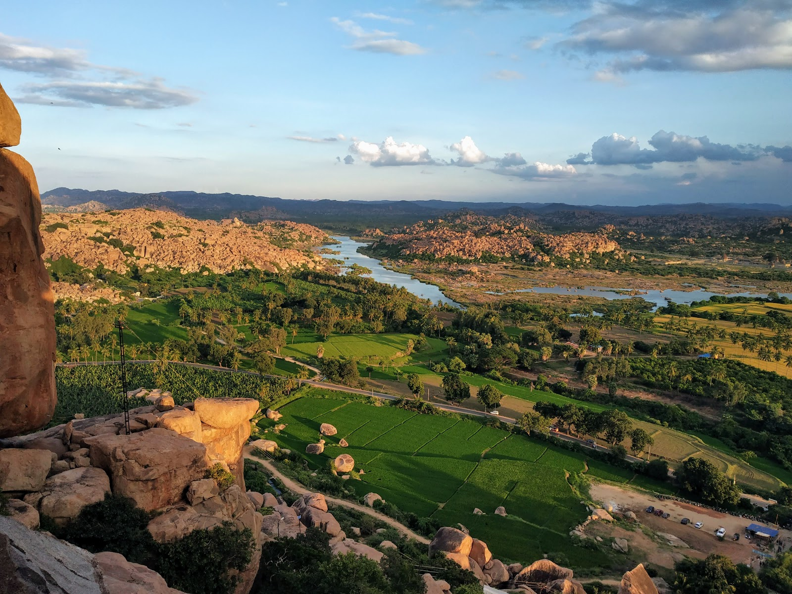
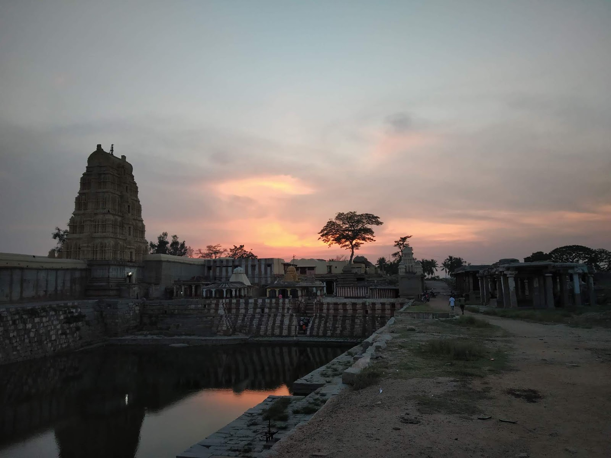

Hampi - World Heritage Site
I HOLD THAT A STRONGLY MARKED PERSONALITY CAN INFLUENCE DESCENDANTS FOR GENERATIONS. ~ BEATRIX POTTER
Hampi and the lost stories in the ruins. It is a beautifully broken Hindu kingdom along Tungabhadra river which is just 300km from Bangalore. So one weekend I planned to travel and went with my friends to reveal the history behind. We took a direct train from Yeshwantpur railway station on a Friday evening to Hosapete to cover the most of the journey and then took an auto rickshaw to travel the remaining 10km and arrived at Hampi on a warm Saturaday morning.
It was October 2018, so it had started to be a little cooler in the town with no mobile networks which gave us peace deep down into our soul. We stayed at the other side of the river because that's where you get bike for rent and most of the ruins to see, instead of staying at the holy temple side. We crossed the river on foot as there was not much of the water flow and took a self driving moped after checking into one of the homestays.

Landscape of Hampi from Monkey Temple
After getting fresh and having brunch at Wispering Woods, we went for sighting and did local boating which was amazing experience. In the evening we gathered the energy and climbed the stairs to reach Monkey Temple for the breathtaking view and sunset. Also we saw amazing musician who called themselves Yatao were playing soothing Handpan instrument.
Along with humans, you will find a lot of monkeys roaming around looking for food. Beaware as they snatch food at times. So after watching the beautiful sunset we headed towards Evergreen Guest house and cafe. Spent rest of the evening there playing music instruments and singing with people from around the world, which was an amazing experience in itself.

Virupaksha Temple
The next day was spent in local sight seeing. We went to Dam and Virupaksha Temple. Since it was a weekend trip, we left from the place in the evening after returning our bikes. Got on the bus to Hosapete and then on the train to Bangalore.